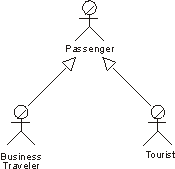

|
Several business actors can play the same role in a particular business use case. Thus, both a Business Traveler and a
Tourist are seen as the same external entity by the business use case that handles the check-in. The shared role is
modeled as a business actor, Passenger, inherited by the two original business actors. We show these relationships with
generalizations.

The actors Business Traveler and Tourist inherit all the attributes of a Passenger. Thus, both these actors can act as
Passengers.
On the other hand, one business user can play several different roles in relation to the business, which means that the
user can correspond to several business actors. If this is the general behavior of this kind of user, the model may
become clearer if the user is represented by one business actor who inherits several business actors. Each inherited
business actor represents one of the user?s roles relative to the business.
|